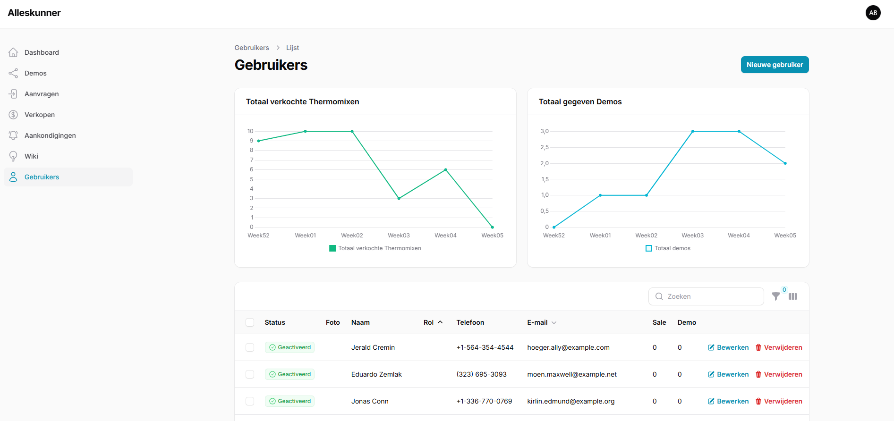

Thermomix Alleskunner website & dashboard (stageproject)
- PHP
- Laravel
- Filament
- Livewire
- TailwindCSS
- MySQL
Dit is mijn stageproject. Een front- en back-end applicatie gemaakt in php/laravel met Filament en Spatie packages. De app heeft een publiek gedeelte waar bezoekers kunnen kennis maken met Thermomix en het team in Brugge. Ze kunnen vervolgens een contact formulier invullen om een advisor te worden. Eenmaal een advisor krijgen ze een persoonlijk dashboard waar ze hun gegevens, verkopen en demo's kunnen bekijken en ingeven. Teamleaders hebben hun eigen dashboard waar zij alle data en KPI's van alle advisors kunnen bekijken, gebruikers beheren, verkopen en demo's bekijken en beheren als ook media kunnen opslaan, versturen en dergerlijk. Ik heb deze app gemaakt van scratch en is nu in gebruik!
Bekijk project